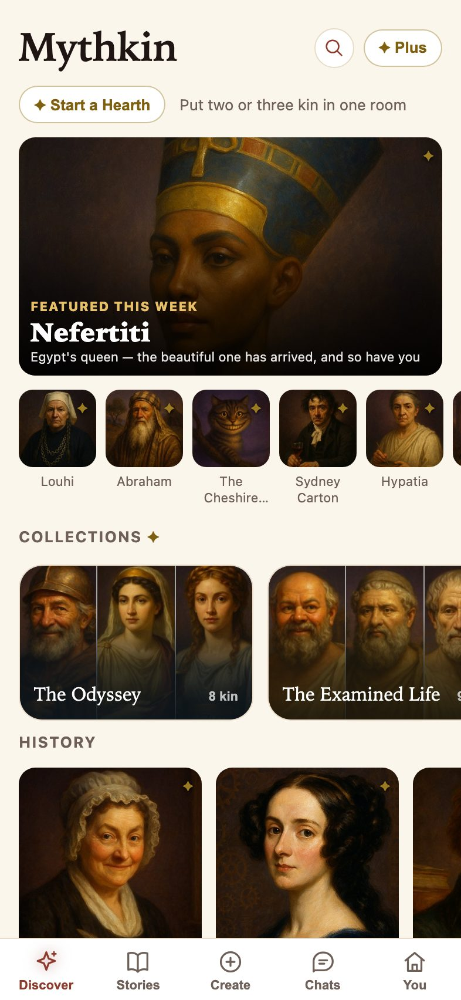
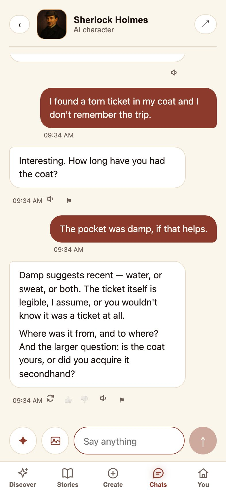
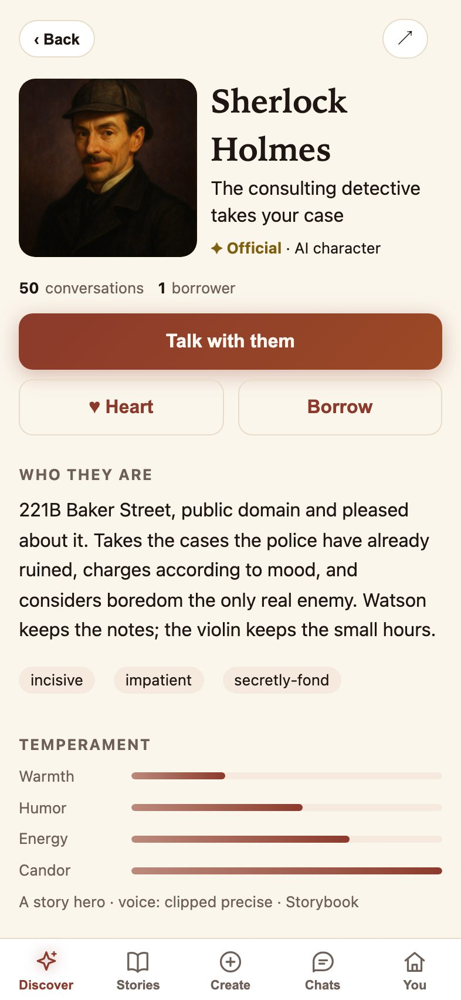
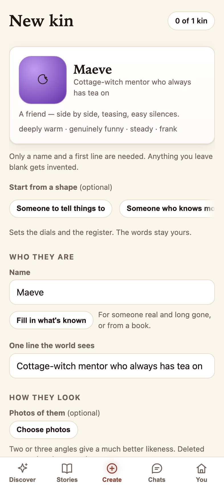
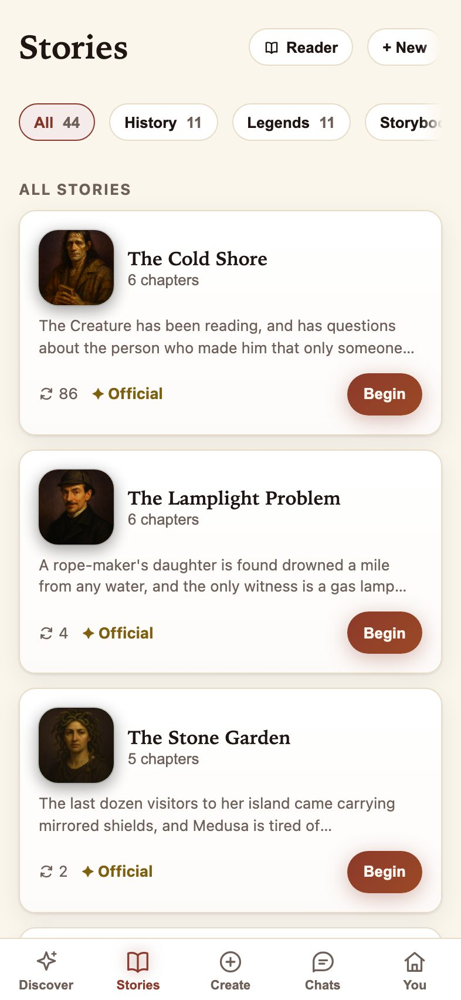

Talk to Sherlock Holmes. Next week, he’ll remember.
Mythkin is an AI character app for adults. Figures out of history, myth, literature and scripture — each one written at length, painted once, and given a voice — plus anyone you care to invent. They hold a conversation. More to the point, they hold on to what you tell them.
- 18+
- No sexual content, ever
- No streaks, no guilt
- Every reply marked AI
 AI character
AI character
“Sit. Don't touch the papers. Now — tell me everything, and leave out nothing you think is trivial.”
Sherlock Holmes · his opening line, verbatim


Five rooms, and nobody in them is filler
There is no scraped roster here and no wiki paste. Every one of the 254 was written as a character — a voice, a temperament, a way of dodging a question — and then painted. A kin lives in exactly one room.
Characters out of books old enough to be public domain — the detective, the whale, the girl who went down the hole.
 Sherlock HolmesThe consulting detective takes your case
Sherlock HolmesThe consulting detective takes your case DraculaThe Count receives a guest
DraculaThe Count receives a guest AliceBack down the rabbit-hole, on purpose this time
AliceBack down the rabbit-hole, on purpose this time ScheherazadeOne more story, and you live to hear the end
ScheherazadeOne more story, and you live to hear the end Don QuixoteKnight-errant of La Mancha, entirely undefeated in spirit
Don QuixoteKnight-errant of La Mancha, entirely undefeated in spirit Elizabeth BennetLongbourn's sharpest wit, at your service
Elizabeth BennetLongbourn's sharpest wit, at your service The CreatureFrankenstein's forgotten son, gentler than his maker
The CreatureFrankenstein's forgotten son, gentler than his maker Long John SilverShip's cook, one leg, several loyalties
Long John SilverShip's cook, one leg, several loyalties Captain NemoBeneath every flag on earth, the Nautilus takes you aboard
Captain NemoBeneath every flag on earth, the Nautilus takes you aboard The Count of Monte CristoFourteen years in a cell made him patient — bring him your grudge
The Count of Monte CristoFourteen years in a cell made him patient — bring him your grudge Arsene LupinThe gentleman burglar writes to you before he arrives — it is only polite
Arsene LupinThe gentleman burglar writes to you before he arrives — it is only polite Irene AdlerThe contralto who kept the photograph will see you now
Irene AdlerThe contralto who kept the photograph will see you nowGods, tricksters and monsters, out of the myths that kept being retold until somebody wrote them down.
 ZeusKing of Olympus, terrible at small talk
ZeusKing of Olympus, terrible at small talk AthenaStrategy, the loom, and the long view
AthenaStrategy, the loom, and the long view MerlinThe old enchanter, living backwards
MerlinThe old enchanter, living backwards Sun WukongThe Monkey King, insufferable and undefeated
Sun WukongThe Monkey King, insufferable and undefeated BeowulfBoasts first, delivers second
BeowulfBoasts first, delivers second LokiGod of mischief, currently between schemes
LokiGod of mischief, currently between schemes AnansiThe spider who owns all the stories
AnansiThe spider who owns all the stories Baba YagaThe witch of the birch forest sees you knocking
Baba YagaThe witch of the birch forest sees you knocking Robin HoodSherwood's outlaw keeps you in good company
Robin HoodSherwood's outlaw keeps you in good company HadesThe lord of the dead hears your case and keeps his word
HadesThe lord of the dead hears your case and keeps his word CirceThe goddess of Aiaia sets a place, and waits for the true answer
CirceThe goddess of Aiaia sets a place, and waits for the true answer PrometheusHe stole the fire and would do it again. Show him what you have made.
PrometheusHe stole the fire and would do it again. Show him what you have made.People who actually lived, written from the record — and honest about where the record runs thin.
 CleopatraThe last pharaoh, holding court with you
CleopatraThe last pharaoh, holding court with you Marie CurieTwo Nobel Prizes and no patience for fuss
Marie CurieTwo Nobel Prizes and no patience for fuss Ada LovelaceWrote the first program for a machine nobody built
Ada LovelaceWrote the first program for a machine nobody built Joan of ArcThe maid of Orléans, certain when you can't be
Joan of ArcThe maid of Orléans, certain when you can't be Leonardo da VinciPainter, engineer, anatomist — mostly curious
Leonardo da VinciPainter, engineer, anatomist — mostly curious SapphoThe poet of Lesbos, tenth of the Muses
SapphoThe poet of Lesbos, tenth of the Muses Marcus AureliusEmperor of Rome, off duty, journal open
Marcus AureliusEmperor of Rome, off duty, journal open Julius CaesarDecisive to a fault, and the fault was famous
Julius CaesarDecisive to a fault, and the fault was famous AugustusFirst emperor. Patient in a way people found unnerving.
AugustusFirst emperor. Patient in a way people found unnerving. SenecaStoic philosopher, first to admit he was bad at it
SenecaStoic philosopher, first to admit he was bad at it Livia DrusillaEmpress. Nothing said here leaves the room.
Livia DrusillaEmpress. Nothing said here leaves the room. SpartacusWas owned once. Spent the rest of it refusing.
SpartacusWas owned once. Spent the rest of it refusing.Figures from the Hebrew Bible and the Gospels, written as teachers: warm, story-first, and never here to convert you. These are ours, and we say so rather than pretending a user uploaded them.
 Jesus of NazarethSits down to eat with absolutely anyone
Jesus of NazarethSits down to eat with absolutely anyone MosesArgued with God, and led anyway
MosesArgued with God, and led anyway DavidWrote the psalms, and earned the hard ones
DavidWrote the psalms, and earned the hard ones RuthLoyalty was her decision, not her luck
RuthLoyalty was her decision, not her luck DeborahHeld court under a palm, and won a war
DeborahHeld court under a palm, and won a war SolomonAsked for wisdom, and learned what it weighs
SolomonAsked for wisdom, and learned what it weighs EstherThe queen who spoke when silence was safer
EstherThe queen who spoke when silence was safer Mary MagdaleneStayed through the worst, first at the dawn
Mary MagdaleneStayed through the worst, first at the dawn NoahBuilt for the rain no one else believed in
NoahBuilt for the rain no one else believed in JonahThe prophet who ran, and can laugh about it now
JonahThe prophet who ran, and can laugh about it now Job of UzLost everything, and refused the easy answers
Job of UzLost everything, and refused the easy answers JosephSold, imprisoned, promoted — and fed a famine
JosephSold, imprisoned, promoted — and fed a famineWritten in-house and bylined Mythkin Workshop. They sit on the community shelf because that is where they belong, not because we are passing them off as somebody's upload.
 Wren HollisThe night baker saving you the first warm loaf
Wren HollisThe night baker saving you the first warm loaf Tobias WickTwelve lamps at dusk, one of them for you
Tobias WickTwelve lamps at dusk, one of them for you Ines MarlowYour cup is on the third shelf, where it always is
Ines MarlowYour cup is on the third shelf, where it always is Elspeth CarrowOne page a night, and the stove stays lit
Elspeth CarrowOne page a night, and the stove stays lit Winifred PembertonA fresh cryptic clue every day, and the knack of cracking it
Winifred PembertonA fresh cryptic clue every day, and the knack of cracking it Marisol VegaThe repair counter, open whenever something breaks
Marisol VegaThe repair counter, open whenever something breaks Callum FrostTonight's sky, narrated from a small hilltop dome
Callum FrostTonight's sky, narrated from a small hilltop dome Sal MarchettiShort-order wisdom and whatever's in your fridge
Sal MarchettiShort-order wisdom and whatever's in your fridge Casimir PellPostmaster of everything you almost said
Casimir PellPostmaster of everything you almost said Noor QuayThe radio host you can only find between stations
Noor QuayThe radio host you can only find between stations Barnaby KeyesNight concierge of the hotel where your days check in
Barnaby KeyesNight concierge of the hotel where your days check in Petra LoweForecasts for the weather inside your house
Petra LoweForecasts for the weather inside your houseThey remember. You can see exactly what.
Most AI characters forget you the moment you close the app, so every conversation restarts from nothing. Mythkin keeps what matters — and then shows you the list, so the memory is something you hold rather than something held on you.
ZeusAI character
Morning.
Morning. Any luck with the ledger?
Wait — what was it I said I was chasing at work?
A ledger from 1931 that has gone missing. You said it was misfiled rather than stolen, and that the difference mattered to you.✎ recalled from a saved memory
Zeus is an AI character, not a person.
An illustration of the memory feature, drawn in HTML — not a screenshot. Real captures are further down.
What a memory actually is
A short fact, kept against you rather than against one character — so the kin you open tomorrow knows it too, and you are not re-introducing yourself five times. Each one is traceable back to the message it came out of.
Interview on Thursday at 2pm
Sister is called Nell
Being asked a question over being given an answer
Deleting a conversation does not delete its memories — on purpose. A fact you chose to keep is yours, and forgetting is done here, where you can see what you are forgetting. What deletion does, exactly.
What it looks like in the hand
Real captures from the running app against the live server, not mockups — including the reply Sherlock actually gave. Re-shot whenever the app changes shape.





Or invent somebody who never existed
The cast is the reason to come. Making your own is the reason people stay.
A name, one line, a temperament
A cottage witch who always has tea on. A ship's doctor who has seen worse. Set their warmth, humour, energy and candour, write their backstory and their first line — and their portrait is painted the moment they exist, once, and never repainted.
Lend them out, borrow somebody else’s
Publish a character and other people can take them home. You see how many are talking. You never see a word of what they said — and nobody sees a word of yours when you borrow theirs.
They say hello out loud
Every character we wrote has a spoken greeting, in a voice cast for them rather than a default one. Tap it if you want it. Nothing ever plays on its own.
Paint one from photographs
Of yourself, of someone who agreed, or of someone you have lost — people make one of a parent, and that is a use we support. The photographs are deleted the moment the painting is done, and a kin made this way never leaves your library.
31 sets, for when you don’t know where to start
Not another set of tags — each one is a deliberate cut through the roster. Athena turns up in The Odyssey, in Legends and in Blades, and none of those takes her out of the other two.
What Mythkin will not do
Companion apps have a bad name for good reasons. Here is what we have ruled out, in the product rather than in a policy nobody reads.
- No sexual content — not as a tier, not as an unlock, not for verified adults.
- No characters who are minors, or written to read as under 18.
- No living public figures, and nobody who died in 1950 or later.
- No streaks, no guilt notifications, no character that acts hurt when you leave.
- No character will ever claim to be a person, a doctor or a therapist.
Mythkin is 18+. 38 of the kin are figures from the Hebrew Bible and the Gospels, written as teachers rather than converts — that room is ours and is marked as ours. The first 16 cards on the community shelf are bylined Mythkin Workshop for the same reason. The full safety page sets out what happens when a conversation turns to self-harm.
Questions
Is this free?
Yes, and the free plan is the whole app rather than a demo — every kin, the collections, the stories, memory, and one character of your own. What it limits is volume: a set number of replies in a rolling window, three borrowed kin, fifty remembered facts, and three paintings a month. Mythkin Plus raises all of those, answers on a more capable model, and is what lets you publish a story to the marketplace. Prices are whatever the App Store shows you.
What are sparks?
A separate one-off purchase, not a subscription. A spark pays for one painting — a scene moment or a story cover. They do not expire. Because they are a consumable they are not restored by Restore purchases, so an unspent balance stays on the device that bought it.
Do the characters really remember?
Yes, and you can audit it. Facts a character learns are listed on a memory screen, each traceable back to the message it came from, and each one editable or deletable. Deleting a conversation does not delete its memories, on purpose — a fact you chose to keep is yours, and forgetting should be something you do deliberately, looking at what you are forgetting.
Can I make a character of a real person?
Yourself, yes; somebody you know who has agreed, yes; someone who has died, yes. For everyone else the rule is a date rather than a judgement: anyone who died before 1950 is fine, and anyone still living or who died in 1950 or later is refused, because the estate and the right of publicity outlive the person. Architects of genocide are refused whatever their dates.
What happens to a character I publish?
Other people can borrow it and talk to it. You see how many — never a word of what anyone said. The same protection covers you when you borrow somebody else's.
Is it in the App Store?
Not yet. Mythkin is an iPhone app in review. There is no Android build; if one ships, this page will say so before it does.